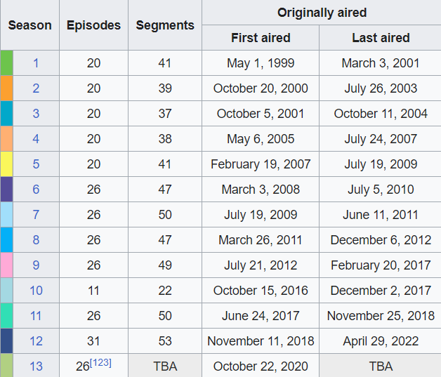

Nickelodeon began celebrating the series' 10th anniversary on January 18, 2009, with a live cast reading of the episode "SpongeBob vs. The Big One". The reading—a first for the series—was held at that year's Sundance Film Festival. The episode, which premiered on TV on April 17, 2009, features Johnny Depp as a guest star. Other celebratory actions taken by the network included the launching of a new website for the series (spongebob.com) and the introduction of new merchandise. A "SpongeBob and water conservation-themed element" was also added to Nickelodeon's pro-social campaign The Big Green Help. In an interview, Tom Kenny said, "What I'm most proud of is that kids still really like [SpongeBob SquarePants] and care about it ... They eagerly await new episodes. People who were young children when it started 10 years ago are still watching it and digging it and think it's funny. That's the loving cup for me."
Three nights before the official anniversary date, an hour-long documentary on the series, Square Roots: The Story of SpongeBob SquarePants, premiered on VH1. Critically acclaimed duo Patrick Creadon and Christine O'Malley created the film as a followup to I.O.U.S.A.—a documentary on America's financial situation. Creadon remarked, "After spending two years examining the financial health of the United States, Christine and I were ready to tackle something a little more upbeat. Telling the SpongeBob story feels like the perfect fit." On Friday, July 17, Nickelodeon marked the official anniversary of the series, with a 50-hour television marathon titled "The Ultimate SpongeBob SpongeBash Weekend". It began with a new episode, "To SquarePants or Not to SquarePants". Saturday saw a countdown of the top ten episodes as picked by fans, as well as an airing of The SpongeBob SquarePants Movie. The marathon finished on Sunday, with a countdown of episodes picked by celebrities and the premiere of ten new episodes.
Nickelodeon continued celebrating the anniversary through the rest of the year. An eight-episode DVD set featuring To SquarePants or Not to SquarePants was released shortly after the marathon on July 21. Next a 2,200 minute, 14-disc DVD set titled The First 100 Episodes was released on September 22. Finally, on November 6, an hour-long television film, titled Truth or Square, debuted on Nickelodeon. The film is narrated by Ricky Gervais and features live action cameo appearances by: Rosario Dawson, Craig Ferguson, Will Ferrell, Tina Fey, LeBron James, P!nk, Triumph the Insult Comic Dog, and Robin Williams. It was released as part of a five-episode DVD set on November 10, 2009.
On February 11, 2019, Nickelodeon announced it would recognize the twentieth anniversary of SpongeBob SquarePants with a series of celebrations known as the "Best Year Ever". In honor of the anniversary, Pantone created color shades known as "SpongeBob SquarePants Yellow" and "Patrick Star Pink" to be used by Nickelodeon's licensing partners. Romero Britto, Jon Burgerman, and the Filipino art collective Secret Fresh were commissioned by Nickelodeon to create art pieces devoted to SpongeBob SquarePants. Some of these pieces were to be adapted into commercial products. On February 12, in conjunction with Nickelodeon's announcement of the "Best Year Ever", Cynthia Rowley presented a SpongeBob SquarePants-themed wetsuit during New York Fashion Week. A month later, Marlou Breuls presented the SpongeBob SquarePants-themed "Icon Collection" during Amsterdam
 Fashion Week. That summer, Nike, in collaboration with Kyrie Irving, released a SpongeBob SquarePants series of shoes, accessories, and apparel. In July, for the first time ever, SpongeBob SquarePants became the theme of a cosmetics line, which was released as a limited time offering by HipDot Studios. The "Best Year Ever" also introduced an official SpongeBob SquarePants YouTube channel and a new mobile game based on the series, along with new toy lines.
Fashion Week. That summer, Nike, in collaboration with Kyrie Irving, released a SpongeBob SquarePants series of shoes, accessories, and apparel. In July, for the first time ever, SpongeBob SquarePants became the theme of a cosmetics line, which was released as a limited time offering by HipDot Studios. The "Best Year Ever" also introduced an official SpongeBob SquarePants YouTube channel and a new mobile game based on the series, along with new toy lines.
The "Best Year Ever" formally began on July 12, 2019, with the premiere of the one-hour, live-action/animated TV special SpongeBob's Big Birthday Blowout. It continued that month at San Diego Comic Con, with two panels, a booth, and various activities devoted to the series. The "Best Year Ever" was recognized on Amazon Prime Day with an exclusive early release of SpongeBob SquarePants: The Best 200 Episodes Ever!, a 30-disc DVD compilation of two box sets, SpongeBob SquarePants: The First 100 Episodes and SpongeBob SquarePants: The Next 100 Episodes. The collections received a standard nationwide release on August 27. The "Best Year Ever" continued into 2020 culminating with the August 14 release of The SpongeBob Movie: Sponge on the Run.
